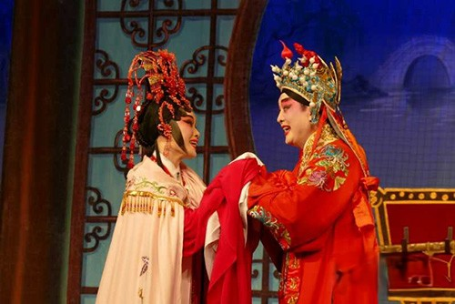
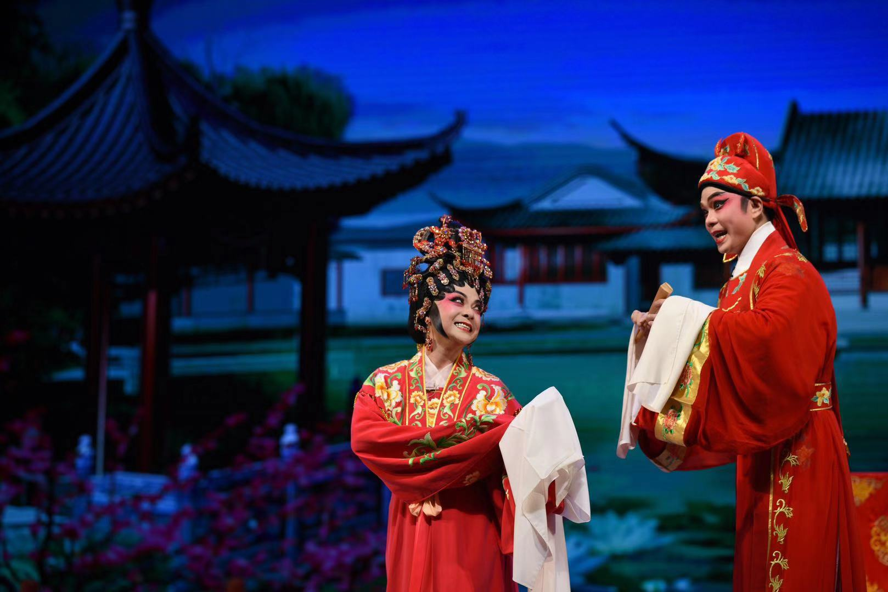
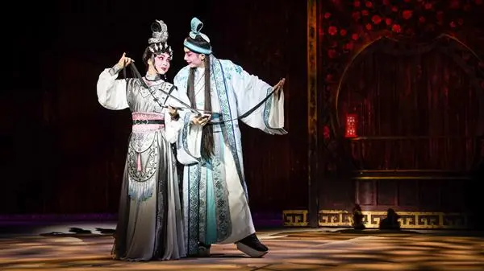

白蛇（白素贞）与青蛇（小青）因向往人间，私下凡尘，在西湖邂逅许仙，并以伞为媒，与许仙结为夫妇。金山寺住持法海，要把白素贞与许仙的姻缘拆散，设下圈套，使白素贞在端午节饮下雄黄酒，现出白蛇原形，许仙被吓惊昏倒。为救丈夫，白素贞冒险上山，采摘灵芝，救回许仙性命。法海又把许仙骗上金山，白素贞为夺回丈夫，水淹金山，但因腹中有孕而力竭战败，路过西湖断桥，产下儿子取名仕林之后，被压在雷锋塔下。十八年后，仕林长大，中了状元，知道母亲被压雷峰塔下，前往奠祭，把塔推倒，终于一家团聚。此剧1912年曾由周康年班演出，扎脚文、狐狸恩主演。20世纪30年代全女班花旦李雪芳因主演《白蛇传?仕林祭塔》一举成名。她演唱的“祭塔腔”成了粤剧专腔。该剧还有多个本子：1955年广州粤剧工作团的演出本，由冯志芬、莫志勤、陈晃宫、关楚梅、陈璐等根据粤剧传统剧目整理，导演陈酉名，李燕清、薛觉明、白驹荣、小木兰等主演。1980年广东粤剧院二团的演出本《仕林祭塔》，由陈冠卿整理，郎筠玉、关国华主演，剧中音乐设计“祭塔腔”唱段有所创新。1982年刘汉鼐根据田汉同名京剧和粤剧传统剧目等多个本子整理的演出本，先后由广东粤剧院一团、二团等多个剧团上演。1983年广州粤剧团实验剧团的演出本，由何建青改编，导演红线女、冯小娟、李飞龙，倪惠英、罗伟华等主演。
唐代，薛仁贵率兵征讨寒江关。阵间樊梨花三擒三放薛丁山，樊梨花钟情薛丁山，私订终身。千岁程咬金劝梨花归唐，愿为其作媒，育成好事。洞房之夜，年少气盛的薛丁山，恼恨樊梨花阵前将其多次擒放视为凌辱，怀疑樊梨花收薛应龙为义子，一定有暧昧，薛丁山一怒之下要将樊梨花休弃。
西辽主帅苏宝同率兵来犯境，薛仁贵命薛丁山出关迎敌。后薛丁山兵败，不得已求助于樊梨花，樊梨花诈死，薛丁山悔悟，夫妻和好。樊梨花归唐与薛丁山合力，一举平定战乱。 樊梨花，美丽无双，武艺高强，天下无敌；虽受辱含冤，却深明大义，顾全大局，以德报怨。她的形象是超常的，美丽的，深刻的，她所体现的正是中国妇女伟大的独立于世的精神。
故事讲述明末思宗长女长平公主年方十五，因奉帝命选婿，下嫁太仆之子周世显，无奈闯王李自成攻入京城，皇城遂破，崇祯手刃众皇女后自缢。长平公主未至气绝，被周钟救返藏于家中。后来清军灭了闯军，于北京立国。长平公主知悉周钟欲向清朝投降，幸得周钟之女瑞兰及老尼姑之助，冒替已故女尼慧清，避居庵中。世显偶至，遇上扮作女尼的长平公主，大为惊愕，几番试探下，长平重认世显。然而此事为清帝知悉，勒令周钟威迫利诱他们一同返宫。夫妻二人为求清帝善葬崇祯，释放皇弟，遂佯装返宫，并在乾清宫前连理树下交拜，然后双双饮砒霜自杀殉国。
传统剧。原编者不详。王安石与苏洵同僚，王之子王雰与苏女苏小妹均极有学问。一日，安石请苏洵至家中饮酒，席中请为其子批改课卷，并露出欲与其结亲之意。苏乃借故嘱女代批，以试探小妹之心。小妹率直指出王雰文章之缺点，苏洵知其不喜王雰，将课卷另批交还，并借故推辞亲事。后王雰终于看出小妹批语，乃设法约小妹比试文才。同时邀高邮才子秦少游作证。结果，小妹赢了王雰，更认识和爱慕了才子秦少游。苏洵对少游亦很器重。后少游得中进士向苏府秋亲，洞房之夕，小妹故意三难新郎，幸得东坡启发，少游始度过难关。20世纪50年代香港美人威剧团曾演出此剧， 谭兰卿、车秀英等主演。其后还有望江南、杨子静的新编本，由广东粤剧院罗家宝、林小群主演。
白蛇（白素贞）与青蛇（小青）因向往人间，私下凡尘，在西湖邂逅许仙，并以伞为媒，与许仙结为夫妇。金山寺住持法海，要把白素贞与许仙的姻缘拆散，设下圈套，使白素贞在端午节饮下雄黄酒，现出白蛇原形，许仙被吓惊昏倒。为救丈夫，白素贞冒险上山，采摘灵芝，救回许仙性命。法海又把许仙骗上金山，白素贞为夺回丈夫，水淹金山，但因腹中有孕而力竭战败，路过西湖断桥，产下儿子取名仕林之后，被压在雷锋塔下。十八年后，仕林长大，中了状元，知道母亲被压雷峰塔下，前往奠祭，把塔推倒，终于一家团聚。此剧1912年曾由周康年班演出，扎脚文、狐狸恩主演。20世纪30年代全女班花旦李雪芳因主演《白蛇传?仕林祭塔》一举成名。她演唱的“祭塔腔”成了粤剧专腔。该剧还有多个本子：1955年广州粤剧工作团的演出本，由冯志芬、莫志勤、陈晃宫、关楚梅、陈璐等根据粤剧传统剧目整理，导演陈酉名，李燕清、薛觉明、白驹荣、小木兰等主演。1980年广东粤剧院二团的演出本《仕林祭塔》，由陈冠卿整理，郎筠玉、关国华主演，剧中音乐设计“祭塔腔”唱段有所创新。1982年刘汉鼐根据田汉同名京剧和粤剧传统剧目等多个本子整理的演出本，先后由广东粤剧院一团、二团等多个剧团上演。1983年广州粤剧团实验剧团的演出本，由何建青改编，导演红线女、冯小娟、李飞龙，倪惠英、罗伟华等主演。
20世纪20年代梁金堂根据美国电影改编。法国巴黎，雪国驻巴黎大使馆参赞亚露弗伯爵风流成性，在巴黎流传许多艳史。驻法大使恐贻国羞，遣之回国。雪国女王鲁懿斯犹未嫁人，群臣请选皇夫。适伯爵回国，女王悉其艳史，正拟严惩，及至召见，惊其俊美，不觉倾倒，遂赐宴璇宫。是夕,伯爵多方献媚，女王情不自禁与他订婚。宫女露露也爱上伯爵的仆人杰克。女王大婚后，伯爵身为皇夫，自谓大权在握。岂料洞房次日早晨，却不见女王。原来女王正检阅御林军，置王夫于不顾。伯爵不悦，遂生龃龊。群臣奏请女王驾临梅花邨联舞大会，并观杰克与露露之婚礼。女王命伯爵同行。伯爵声言不惯束缚，不愿同去。梅花邨联舞大会上，女王驾临，百官偕从，独不见伯爵。女王见众人俱成双成对，独坐触景伤情。忽伯爵至，女王大喜，佯怒薄责之。伯爵转身欲走，女王挽留。晚上，女王因不见伯爵陪伴，往寻之，见伯爵正抚小犬唱着“复返巴黎之歌”。伯爵厉言王夫地位之不自由，阴阳倒置之不适宜。女王愿让其位与伯爵。伯爵成了一个浪漫不羁的国王。此剧1930年由觉先声剧团首演，薛觉先、谢醒侬、梁玉堂、叶弗弱、陈锦棠、苏州女等主演。
